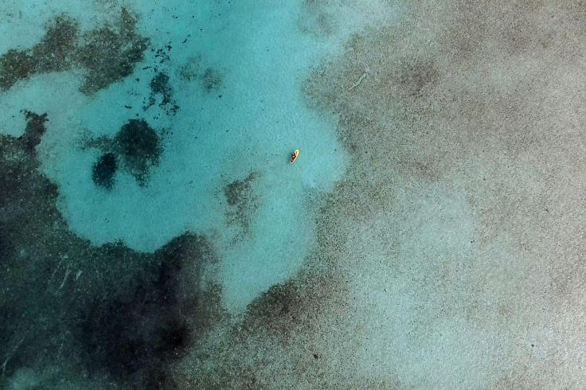
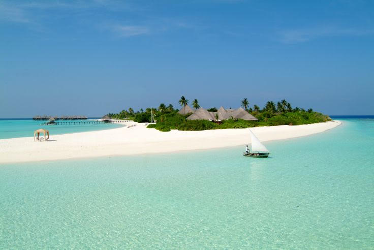
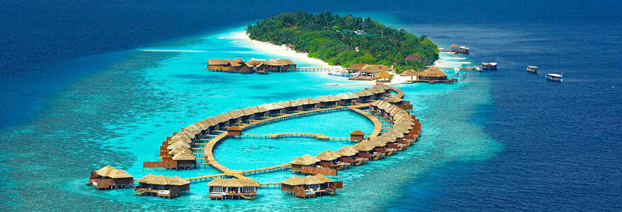

La faune
En raison de la toute petite taille de ces îles, la faune des Maldives est presque exclusivement marine. On y trouve de nombreuses population de raies mantas, requins baleines et de dauphins. Concernant la faune terrestre, on peut signaler quelques roussettes, chauves souris ou lézards. A certaines périodes de l'année, il est possible d'admirer des oiseaux migrateurs dont les échassiers.


Les mammifères marins
Bien que l'archipel ne soit pas spécialement réputé pour, on peut apercevoir de nombreuses espèces de mammifères marins comme les dauphins. Les baleines à bosses et des orques peuvent également être aperçus. Les dauphins se laissent parfois approcher en bateau.
La raie manta est certainement le poisson emblématique de la plongée dans l'archipel des Maldives. Migrateur, la raie manta se déplace en fonction de là où se trouve le plancton, son unique aliment. Le meilleur endroit pour les observer est sans nul doute une « station de nettoyage ». Pour leur survie, les raies mantas se font régulièrement déparasiter par des petits poissons de 10cm, les labres. Les raies arrivent sur ces stations, au dessus des coraux, où les poissons nettoyeurs s'activent. Le spectacle peut durer plusieurs heures, pendant que d'autres raies mantas attendent patiemment leur tour en « vol » quasi stationnaire.
Les coraux
Les coraux marins appartiennent bel et bien à la famille des animaux (embranchement des Cnidaires, le même que celui des méduses). Chaque individu de corail est nommé un polype, et chaque polype dispose d'un exosquelette secrété par lui même à partir des minéraux qu'il a récupérés dans l'océan.
Le jour, ils se comportent comme des plantes. C'est la nuit qu'ils se nourrissent et s'épanouissent, d'où l'intérêt de plonger de nuit pour admirer ce spectacle.
Le jour, ils se comportent comme des plantes. C'est la nuit qu'ils se nourrissent et s'épanouissent, d'où l'intérêt de plonger de nuit pour admirer ce spectacle.
